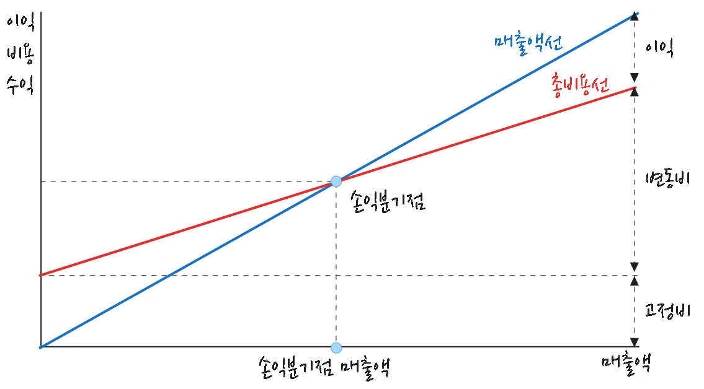

사업성분석
손익분기점
손익분기점(Break Even Point)이란 총 매출과 이를 위해 지출된 총 비용이 일치되는 매출액을 의미한다. 즉, 일정기간 매출액이 그 기간에 지출된 비용과 같아서 이익도 손실도 발생하지 않는(이익 금액 - 손실 금액 = 0) 지점을 가리킨다. 손익분기점분석은 조업도 변동에 따라 수익과 비용 변동 상황을 나타냄으로써 기업 채산성 파악을 위한 중요한 수단이 됨은 물론 장래 경영 계획과 통제 수잔으로 널리 이용되고 있다.

\[ 손익분기점 \ 매출액 \ = \ \frac{고정비}{1 \ - \ \frac{변동비}{매출액}} \]
손익분기점률은 손익분기점에서 매출액과 이미 실현된 매출액 간 비율로서, 일반적으로 이 비율이 낮을수록 영업활동 채산성이 양호함을 의미하나, 손익분기점률 고저가 수익성을 좌우하는 절대적 지표라고는 할 수 없다. 손익분기점은 매출액과 비용 간 상관관계를 나타내지만 투하자본(총자본) 회수를 위한 적정매축액을 표시하는 것이 아니기 떼문이다.
\[ 손익분기점률(\%) \ = \ \frac{손익분기점 \ 매출액}{매출액} \times \ 100 \]